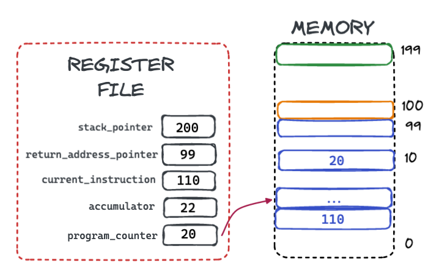
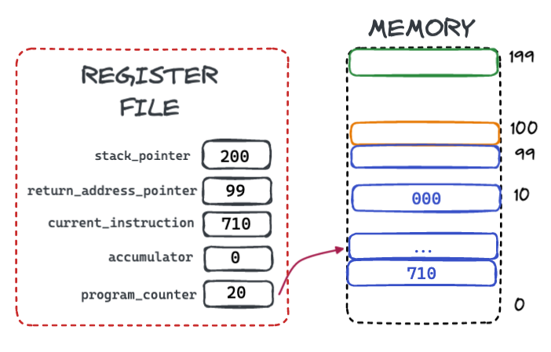
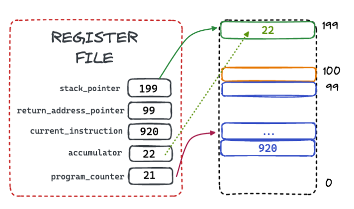
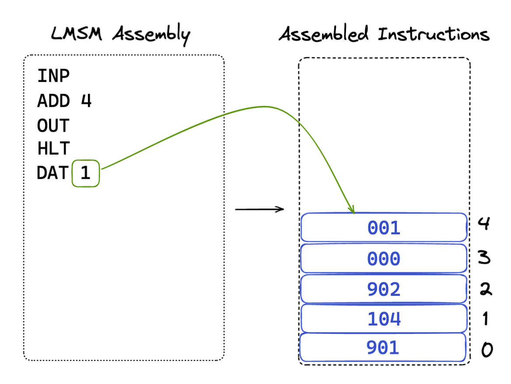

🙋 The Little Man Stack Machine
The LMSM Instruction Cycle
As a Von Neumann machine, the LMSM follows a simple Instruction Cycle, identical to the instruction cycle of the LMC:
-
The value in the memory location pointed to by the
program_counterregister is retrieved from memory and placed in thecurrent_instructionregister. - The program counter is incremented by one.
- The instruction is executed.
- The cycle is repeated.
This simple loop is the basis for computation on the LMSM and, in a broad sense, of many of the computers we use today.
Instructions, when executed, update the state of the computer in some manner: moving a value between memory locations and registers, updating registers, outputing data, etc.
Example Execution
In order to understand how execution works, let's step through a cycle of execution in detail. Consider an
LMSM whose program_counter is set to 0 and who has the following numeric values
in the first three slots in memory:
Cycle 1
Execution would begin by retrieving instruction from memory slot 0, which is where the
program_counter
initially points to and placing it in the current_instruction register:
Next, the program_counter value is incremented from 0 to 1, so that it points to the next
instruction
in memory:
Next, the instruction is executed. In this case, the instruction is 401, which tells the
LMSM to place the value 1 into the accumulator register.
(We will go over exactly what each instruction means in the next section.)
This completes a single instruction cycle for the LMSM. The LMSM then starts again from the beginning of the cycle and repeats the same logic.
Cycle 2
This time the program_counter is pointing to slot 1, so the instruction 902 is loaded into the
current_instruction register and the program_counter is incremented to the value 2.
The 902 instruction tells the LMSM to print the current value of the accumulator register to
output.
Once again, the cycle repeats.
Cycle 3
Now the program_counter is pointing to slot 2, so the instruction 000 is loaded into the
current_instruction register and the program_counter is incremented to the value 3.
The 000 instruction tells the LMSM to halt, and so it stops executing.
A Completed Program!
The program above prints the number 1 to output. It might not look like much, but this is the "Hello World" of LMSM, and it demonstrates the basic operation mechanics of the system.
LMSM Instructions
In the program above we executed LMSM machine instructions to achieve something. In this section we will go over all the instructions available and what they do.
The first thing to bear in mind is that LMSM instructions are stored in LMSM memory as "regular" data. There is no distinction between "instructions" and "data". Just like any other piece of data in the LMSM, instructions are numeric values between -999 and 999.
Let's look at the available instructions.
LMC Instructions
The LMSM supports the following instructions, which are all taken, unchanged, from the LCM:
| Machine Code | Assembly Instruction | Description |
|---|---|---|
| 1XX | ADD <XX> | Adds the value located in memory at position XX to the value of the accumulator. |
| 2XX | SUB <XX> | Subtracts the value located in memory at position XX to the value of the accumulator. |
| 3XX | STA <XX> | Stores the value of the accumulator to the memory location at position XX |
| 5XX | LDA <XX> | Loads the value of the memory location at position XX into the accumulator. |
| 6XX | BRA <XX> | Unconditionally sets the program counter to the given value |
| 7XX | BRZ <XX> | Sets the program counter to the given value if and only if the value of the accumulator is 0 |
| 8XX | BRP <XX> | Sets the program counter to the given value if and only if the value of the accumulator is 0 or a number greater than 0 |
| 901 | INP | Gets a numeric value from the user and stores it in the accumulator |
| 902 | OUT | Prints the current value of the accumulator to output |
| 000 | HLT | Halts the system, ending the execution loop |
| DAT <XXX> | An assembler-only instruction that allows a program to insert a raw value into a given memory location |
Because the LMSM supports all these instructions, a LMC program will execute on the LMSM. The LMSM is backwards compatible with the LMC, which is a very common situation in CPU evolution: as CPUs developed, old code often continued to work on the new CPUs.
The "Load Immediate" Instruction
In addition to these standard LMC instructions, the LMSM also supports two new "standard" instructions:
- An "immediate" instruction to load a value directly into the accumulator (We saw this instruction in our simple "Hello World" program)
- A "noop" instruction that makes code generation in the Firth compiler easier
| Machine Code | Assembly Instruction | Description |
|---|---|---|
| 4XX | LDI <XX> | Loads the numeric value XX directly into the accumulator. |
| 900 | NOOP | Does nothing |
Stack Instructions
The most significant addition to the LMC model in the LMSM is the addition of several instructions for working with the new stacks available in upper memory:
| Machine Code | Assembly Instruction | Description |
|---|---|---|
| 920 | SPUSH |
"Pushes" the value of the accumulator onto the top of the value stack, by
decrementing the stack_pointer register by 1 and then copying the
value from the accumulator to the memory location that the stack_pointer
points to.
|
| 921 | SPOP |
"Pops" the value off top of the value stack into the accumulator by copying
the value in the memory location that the stack_pointer points to the
accumulator
and then incrementing the stack_pointer.
|
| 922 | SDUP |
"Duplicates" the top of the value stack by decrementing the value of the stack_pointer and
then copying the value directly above the memory location that the stack_pointer points
to to the memory location that the stack_pointer points to.
|
| 923 | SDROP |
"Drops" the top of the value stack by incrementing the value of the stack_pointer.
|
| 924 | SSWAP |
"Swaps" the top of the value stack by swapping the value in the memory location directly above the
memory location that the stack_pointer points to with the value in the memory location
that the stack_pointer points to.
|
| 930 | SADD | Removes the top two values on the stack, adds them together and places the result onto the stack. |
| 931 | SSUB | Removes the top two values on the stack, subtracts them and places the result onto the stack. |
| 932 | SMUL | Removes the top two values on the stack, multiplies them and places the result onto the stack. |
| 933 | SDIV | Removes the top two values on the stack, divides them and places the result onto the stack. |
| 934 | SMAX | Removes the top two values on the stack, and places the maximum of the two values back on the stack. |
| 935 | SMIN | Removes the top two values on the stack, and places the minimum of the two values back on the stack. |
| 910 | JAL | The "Jump And Link" instruction updates the program counter to the value that the stack pointer currently points to and then increases the value of the return address register by one and saves the address of the next instruction after the "Jump And Link". |
| 911 | RET | The "Return" instruction updates the program counter to the value that the return address pointer currently points to and then decreases the value of the return address register by one. |
Assembly Instruction Examples
Let's look at the mechanics for a few instructions on the LMSM to get a feel for how things work.
The ADD Instruction
The ADD assembly instruction takes a two digit argument and tells the LMSM to add the value
at that memory location to the accumulator.
Consider the assembly ADD 10. This would assemble down to the machine instruction 110.
If this instruction were loaded into memory and ready to execute, the LSMS would look like this:

Note that the program counter is pointing to the instruction after the ADD machine instruction,
and the ADD machine instruction has been loaded into current instruction register. The LMSM
is ready to execute the instruction and continue.
Note also that the value stored in memory location 10 is the value 20, and that
the accumulator currently has the value 22.
Once the instruction has executed the value 20 has been added to the accumulator, giving the
value 42.
The LMSM then moves on to the next instruction.
The BRZ Instruction
The BRZ assembly instruction takes a two digit argument and tells the LMSM to "jump" to that
memory location if the accumulator is zero. This is an example of assembly control flow, allowing the
LMSM to conditionally execute code depending on the state of data.
Consider the assembly BRZ 10. This would assemble down to the machine instruction 710.
If this instruction were loaded into memory and ready to execute, the LSMS would look like this:

Note that the program counter is pointing to the instruction after the BRZ machine instruction,
and the BRZ machine instruction has been loaded into current instruction register.
The accumulator currently has the value 0, so the condition to make the jump is true.
Once the instruction has executed, because the accumulator had the value 0, the program counter has been updated
to point to the instruction at memory position 10, which has the value 000.
The value 000 tells the LMSM to halt, so this BRZ instruction is effectively telling
the LSMS: "Stop executing if the accumulator is zero."
The SPUSH Instruction
The next instruction we are going to look at is the SPUSH instruction, which takes the current
value of the accumulator and "pushes" it onto the top of the value stack.
Note that the stack pointer starts with the value 200, indicating that there are no values
on the stack, and that the accumulator starts with the value 22. This latter value will be the value
"pushed" onto the stack.
The first step in the push operation is to decrement the stack pointer register by 1 to
199. This will be the memory location that the LMSM stores the value into.
The second step in the push operation is to move the value of the accumulator into the memory location that the stack pointer points to.

At this point, the LMSM is done: the value 22 has been "pushed" onto the top of the value stack. If another
SPUSH were to occur, the new value would be located in the next slot down from this, effectively
"growing" the value stack downwards.
The SADD Instruction
The final instruction we are going to look at is the SADD instruction, which adds the top two
values on the value stack together and replaces them with the result.
Note that in this case the stack pointer starts with the value 198, and that there are two values
on the stack, 5 and 8, with 8 being on the top of the stack.
The first step in execution is to add the two values together, producing the value 13 and placing
it in the slot just above the current stack pointer.
The next step in execution is to increment the stack pointer to 199. This step effectively drops
the top value 8 from the stack, leaving 13, the result of the addition, at the top
of the stack.
Note also that the 8 value is not zero'd out: it is no longer relevant since the stack pointer
is "above" (or, if you like, "below" it).
At this point, the LMSM is done with this instruction: the top two values have been "popped" off the stack, added and the result has been "pushed" onto it.
DAT Assembly Instructions
The DAT assembly instruction tells the LMSM assembler: "Put the value following me directly into
the memory spot I correspond with.
Consider the following LMSM Assembly program:

The DAT assembly instruction tells the assembler to place the raw value 1 into the
memory location that the instruction corresponds to. In this case, the value 1 is placed in
memory location 4, since that is the memory slot that corresponds with the DAT
assembly instruction.
The DAT assembly instruction lets programmers save numbers in memory for use in their programs. In
this case, the program asks the user for input, adds the value 1 to it (even though the second instruction
reads ADD 4, remember that means "Add the value in memory location 4 to the accumulator")
and then outputs the result.
Labels
Labels are a feature of LMSM that let programmers use symbolic, rather than absolute, locations when writing
assembly. In the previous example, the ADD instruction had a hard-coded reference to memory location
4.
But what if we added another instruction, say another ADD, to add the number twice:
Now we are in a bad spot! The ADD 4 instructions reference memory location 4, but that
holds the HLT instruction, which has the value 0. So we are now inadvertently adding
the value 0 to the accumulator twice!
We could fix this by updating the two instructions to be ADD 5, but it would get annoying if, every
time we changed the program, we had to go back and edit all these instructions. What would be better is if
we could give a particular instruction a symbolic name and then let the assembler figure out the
location that the instruction ends up at.
This is exactly what labels give us. Any assembly instruction, including DAT instructions,
can be labeled with a prefix, and then referred to by other instructions via that prefix.
Let's give the DAT instruction the label ONE, since it holds the value 1
for use in our program:
We prefix the DAT instruction with the label ONE and then update the ADD
instructions to refer to that label, rather than fixed positions in memory. Now the assembler goes through
the trouble of figuring exactly where the value 1 ends up in memory, and generates the correct
machine instructions for the ADD assembly instructions.
Much nicer!
Pseudo-Instructions
In addition to the "real" assembly instructions above, LMSM assembly supports two "pseudo-instructions". Pseudo-instructions are assembly instructions that are valid assembly, but that do not correspond directly to a single machine instruction.
Pseudo-instructions are included in the LMSM to make assembly programming more convenient and because they are common in other more realistic assembly languages, particularly RISC-based languages like MIPS.
| Pseudo-Instruction | Assembly Instructions | Description |
|---|---|---|
| SPUSHI <XX> |
LDI <XX> SPUSH |
This pseudo-instruction pushes the immediate value given onto the stack, compiling down to two real instructions |
| CALL <XX> |
LDI <XX> SPUSH JAL |
This pseudo-instruction pushes the address of a function onto the stack and then jump-and-links to it |
Loops & Conditionals In LMSM
To understand how loops and conditionals work in LMSM, let's look at a classic LMC program that asks a user for input and then counts down:
INP
OUT
LOOP BRZ QUIT
SUB ONE
OUT
BRA LOOP
QUIT HLT
ONE DAT 1
Here is each line explained:
- Line 1 asks the user to enter a number and saves it in the accumulator
- Line 2 prints that number out.
-
Line 3 is labeled
LOOPand jumps (or branches) to the location labeledQUITif the accumulator is0 -
Line 4 subtracts the value stored in the memory location labeled
ONEfrom the accumulator. - Line 5 prints the accumulator out.
-
Line 6 unconditionally jumps back to the instruction on line 3, labled
LOOP -
Line 7 is labeled
QUITand halts the machine -
Line 8 is labeled
ONEand holds the raw value1
So, this program will ask the user for a number and then print out a count-down from that number to
0. The conditional branch on line 3 gives us the conditional, akin to an if
statement in a higher level programming language. The unconditional branch on line 6 is what makes the
code "loop".
Function Calls
The last major bit of functionality to understand about the LMSM is how function calls work. This topic is sufficiently complicated and important as to deserve its own section, which you can find here.